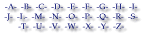
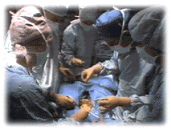

Glossary of related terminology:

- A -
- acetylcholine
- a chemical agent that is released by nerve endings; its effects include cardiac inhibition, increase in blood vessel diameter, and other effects
- adenoma
- an ordinarily benign (nonmalignant) tumor of skin tissue
- aflatoxin
- a toxic chemical produced by the Aspergillus flavus and A. parasiticus molds.
- agonist
- a drug that both binds to receptors and has an intrinsic effect
- alopecia
- loss of hair
- amino acid
- a component part of every protein, in which up to 20 different amino acids are strung together into polymer chains like beads in a necklace; the sequence of its amino acids determines a protein's structure and function; many proteins catalyze chemical reactions in the body.
- anabolism
- the building up in the body of complex chemical compounds from smaller simpler compounds (e.g., proteins from amino acids); see catabolismcatabolism for comparison
- anaphylactoid
- resembling anaphylaxis, an immediate, transient allergic reaction
- anaphylaxis
- an immediate allergic reaction to a pharmacologic agent
- androgen
- any substance that produces masculinization, such as testosterone
- anorexiant
- a drug or substance that leads to anorexia or diminished appetite; appetite suppressant.
- antagonist
- a drug that impedes the action of another chemical substance in the body
- anticoagulant
- an agent that prevents coagulation or the transformation of a liquid into a semisolid mass (as in the coagulation of blood)
- atherogenic
- having the capacity to start or accelerate the process of atherogenesis or the formation of lipid deposits in the arteries
- atherosclerosis
- The narrowing of an artery
- area under the curve (AUC)
- a measure of how much of a drug reaches the bloodstream in a set period of time, usually 24 hours. AUC is calculated by plotting drug blood concentration at various times during a 24-hour or longer period and then measuring the area under the curve between 0 and 24 hours as shown in the figure to the right.
- apotosis
- programmed cell death in which the cell membrane and genetic material disintegrate
- arthralgia
- severe joint pain
- atopy
- an allergic reaction with strong family tendencies
- atrial fibrillation
- rapid irregular twitchings of the wall of the atrium (chamber) of the heart
- arrhythmia
- irregular heart beat
- axon
- the long, filamentous part of a neuron (nerve cell) that carries nerve impulses away from the cell
- Angiocardiography
- A diagnostic method involving injection of a dye into the bloodstream or heart chambers. Chest X-rays taken after the injection shows the inside of the heart and great vessels as outlined by the dye.
- Anoxia
- Literally, no oxygen. This condition most frequently occurs when the oxygen supply to a part of the body is critically diminished.
- Anticoagulant
- A drug which delays clotting of the blood. Given in cases where a blood vessel has been plugged by a clot and to prevent new clots from forming, or the existing clots from enlarging. It does not dissolve an existing clot. Examples are heparin and warfarin.
- Aorta
- The large artery that receives blood from the left ventricle of the heart and distributes it to the body.
- Aortic Arch
- The part of the aorta leaving the heart, which curves up like a handle of a canoe over the top of the heart.
- Aortic Stenosis
- A narrowing of the valve opening between the left ventricle of the heart and the aorta.
- Aortic Valve
- The heart valve between the left ventricle and the aorta. It has three flaps, or cusps.
- Arterial Blood
- Oxygenated blood. The blood is oxygenated in the lungs, passes from the lungs normally to the left side of the heart via the pulmonary veins. It is then pumped by the left side of the heart into the arteries which carry it to all the parts of the body.
- Artery
- Any one of a series of vessels that carries oxygenated blood from the heart to various parts of the body.
- Asymptomatic
- Having no symptoms. A person is asymptomatic when not exhibiting any functional evidence of a disease or condition.
- Atresia
- The absence of a normal opening.
- Atrial Septum
- Muscular wall dividing left and right upper chambers of the heart.
- Atrial Septal Defect
- An abnormal opening in the wall (septum) that divides the left and right upper heart chambers.
- Atrium
- One of the two upper chambers of the heart. The right atrium received unoxygenated blood from the body. The left atrium receives oxygenated blood from the lungs.
- B -
- beta-adrenergic antagonist
- also known as beta-blockers, these drugs inhibit the action of certain types of neurons that stimulate beta receptors (see chemoreceptor)
- bioavailability
- the amount of drug that is available to the target tissue after administration; this may not be 100% due to degradation or alteration before reaching the target tissue
- Bacterial Endocarditis
- An inflammation or infection of the lining of the heart or heart valves. It is commonly a complication of an infectious disease, operation, injury or dental work.
- Balloon Angioplasty
- A technique used during cardiac catherization or surgery with a balloon tipped catheter. This is primarily to widen a narrowed area of a blood vessel. Also called balloon dilation angioplasty.
- Balloon Valvuloplasty
- A procedure in which a ballon is inserted into the opening of a narrowed heart valve. When the balloon is inflated, the valve is stretched open: and then the balloon is delated and removed.
- Bicuspid Valve
- A valve with two leaflets.
- Blalock-Taussig Shunt
- A palliative surgical procedure, connecting the aorta to either pulmonary artery, to improve blood supply to the lungs.
- Blood Pressure
- The force or pressure exerted by the heart pumping blood; pressure of blood in the arteries. Blood pressure involves two measurements: Systolic is the pressure of the blood on the artery wall when the heart beats. This is the highest pressure. Diastolic is the pressure of the blood on the artery wall between beats. This is the lowest pressure. The blood pressure is expresses by two numbers with the upper one over the lower one. (systolic/diastolic). Example 110/70.
- Bradycardia
- An abnormally slow heart rate.
- Bundle of His
- Part of a group of specialized cells between the atria and the ventricles which serve to conduct electrical impulses to the ventricels for a regular heartbeat. Named after Wilhelm His, German anatomist.
- C -
- Carotid artery
- an artery leading to the brain. Blockage of a carotid artery causes stroke.
- catalyze
- to greatly accelerate a chemical reaction; enzymes, for example, are protein catalysts that speed up biochemical reactions in the body; the enzyme is not consumed in the process
- chemoreceptor
- a molecular structure on the surface of a cell that is sensitive to chemical substances, such as epinephrine released by nerve cells
- chemotaxis
- movement or response of cells to chemicals
- cholinergic parasympathomimetic agent
- a chemical substance that causes the release of choline (acetylcholine) from parasympathetic nerve endings
- chorionic
- referring to the chorion or membrane enclosing the fetus
- cytotoxic
- destructive to cells
- Cardiac
- Pertaining to the heart.
- Cardiac Arrest
- When the heart stops beating.
- Cardiac Output
- The amount of blood pumped by the heart per minute.
- Cardiologist
- A specialist in the diagnosis and treatment of heart disease.
- Cardiology
- The study of the heart and its functions in health and disease.
- Cardiomyopathy
- A disorder of the muscle of the heart.
- Catheter
- A thin, flexible tube which can be guided into the body organs.
- Catheterization (CATH)
- A special procedure in which a thin, plastic tube or catheter is advanced through a blood vessel of the arm or groin into the heart chambers for the purpose of examination or
treatment. It is done to sample oxygen, measure pressure and make X-ray movies. To see a drawing of a catheterization, click HERE.
- Closed-Heart Surgery
- Surgery that does not require the heart-lung machine and is performed on blood vessels in the chest but outside the heart itself.
- Coarctation of the Aorta
- A portion of the main artery (aorta) is narrowed or constricted.
- Congenital
Existing at birth.
- Congenital Anomaly
- An abnormality present at birth.
- Congenital Heart Defect
- Part of the heart or its major blood vessels that is not formed properly and does not work as it should from birth.
- Congestive Heart Failure
- The inability of the heart to pump out all the blood that returns to it. This results in blood backing up in the veins that lead to the heart. Sometimes fluid builds up in various parts of the body.
- Coronary Arteries
- Two arteries, arising from the aorta, arching down over the top of the heart, and carrying blood to the heart muscle.
- Cyanosis
- Blueness of the skin caused by insufficient oxygen in the blood. Oxygen is carried in the blood by hemoglobin, which is bright red when saturated with oxygen, but becomes purple without oxygen
- D -
- Dorsal
- pertaining to the back
- Diastol
-
The phase of the heart cycle in which the heart chambers fill with blood. This is the heart's resting phase.
- Digoxin
-
A drug often used in treating congestive heart failure. It makes the contraction of the heart muscle stronger and slows the rate of heart beats.
- Diuretic
-
A drug that increases the rate that urine forms. It promotes the excretion of water and salts, and helps remove extra fluid from body tissues.
- Dysrhythmia
-
An irregular heart beat.
- E -
- edema (eh-DEE-mah)
- excess fluid buid up in cells or tissues
- embolism
- obstruction of a vessel
- elimination half-life
- the time it takes for the body to eliminate or breakdown
half of a dose of a pharmacologic agent
- emetogenic (eh-MET-oh-gen-ik)
- induces vomiting
- endometrium (en-doh-MEE-
tree-um)
- the inner mucous membrane of the uterus
- enzyme (EN-zime)
- a protein catalyst that speeds chemical reactions in
living organisms (see catalyze
- epithelium (ep-i-THEE-lee-um)
- the cellular layer without blood vessels covering free
surfaces of the body such as the skin
- esophagitis
(E-sof-ah-ji-tis)
- inflammation of the esophagus
- etiology (ee-tee-OL-oh-gee)
- the science of the causes and modes of operation of
diseases
- exfoliate (eks-FO-lee-ate)
- to shed cells from the epithelium layer of the skin or
mucosa
- Electrocardiogram (EKG, ECG)
-
A graphic recording of the electrical currents generated by the heart.
- Echocardiography
-
A diagnostic method by which pulses of sound (ultrasound) are transmitted into the body and their echoes returning from the surface of the heart and other structures are electronically
plotted and recorded.
- Echocardiogram
-
A picture of the heart and vessels made by echocardiography.
- Edema
-
Abnormally large amounts of fluid collecting in the tissues of thebody which shows uo as puffiness or swelling, especially in the hands, feet or face.
- Endocardium
-
The smooth inner lining of the heart wall, lying between the heart muscle (myocardium) and the blood inside the heart chambers.
- F -
- feedback inhibition
- mechanism that maintains
constant secretion of a product by exerting inhibitory
control
- fibroblastic
(fi-bro-BLAS-tik)
- pertaining to fibroblasts, or connective tissue cells
- folic acid
- a member of the viatmin B complex involved in the
formation of red blood cells
- G -
- ganglion (GANG-glee-on)
- pl. ganglia; any group of nerve cell bodies located in
the peripheral nervous system
- gonadotropin
- a hormone that promotes gonad (sex gland) growth and
function
- guar
- a naturally occuring carbohydrate gum used as a
thickening agent in foods and in weight-loss preparations
- H -
- half-life
- the time required for the decay of half a sample of a
radioactive substance; may also apply to pharmacologic
agents (see elimination half-
life)
- hemorrhagic
- relating to bleeding
- histopathologic
- the correspondence between the microscopic structure of
cells and tissues and their functions
- hormone
- a chemical substance, often a protein, that regulates the
actions of its target organs
- hypergonadotropic
- increased production of
gonad-stimulating hormone from the anterior pituitary
gland
- hyperkeratosis (hi-per-
ker-ah-TOE-sis)
- a disease resulting in the abnormal growth of the
corneous (hornlike) layer of the skin
- hyperpigmentation
- abnormally increased pigmentation
- hyperplasia (hi-per-
PLAY-zee-ah)
- an abnormal increase in the number of normal cells in a
tissue
- hypogonadism
(high-po-GO-nad-izm)
- below normal gonad (sex gland) function
- hypothalamus
- an area of the forebrain which regulates pituitary
glandpituitary secretion among many other functions
- hypoxemia
(high-POCK-see-me--ah)
- below normal oxygen content in arterial blood
- Heart Block
-
A state, either congenital or acquired, in which there is an interruption in the electrical conduction of an impulse between the upper (atria) and lower (ventricle) chambers. Thus, the
atria and ventricles beat independently of each other. The resultant effect is usually a very slow heart rate which may cause fainting.
- Heart Disease
-
A term used for ailments of the heart and blood vessels.
- Heart-Lung Machine
-
During open-heart surgery, a machine that supplies oxygen to the blood and acts as a pump to circulate the blood to the body.
- Heparin
-
A chemical substance which prevents blood from clotting.
- Holter Monitoring
-
A process by which a 24-hour EKG can be tape recorded. The individual wears a small tape recorder connected to electrocardiographic leads placed on the chest for 24 hours.
- Hypertension
-
Commonly called high blood pressure.
- Hypoplastic
-
Too small or poorly developed. In most severe heart flow defects, either the right or left ventricle may be hypoplastic and incapable of functioning normally.
- Hypothermia
-
A procedure that lowers a patient's body temperature during surgery. When the body is quite cool it requires less nourishment and oxygen to maintain itself. Research has shown that
heart surgery is safer when the body is cooled down.
- I -
- idiopathic (id-ee-oh-PATH-ik)
- describing a disease of unknown cause
- immunodeficiency
- a condition resulting from a defective immune system
- infiltrate (in-FILL-trait)
- material deposited as a result of filtration
- in vitro (in VEE-troh)
- from the Latin meaning in glass; in an artificial
environment such as a test tube or the equivalent
laboratory apparatus
- J -
- K -
- L -
- M -
- mast cell
- a type of granulated cell found in connective tissue
- median time to
elimination
- the time it takes one half of a drug to be eliminated
from the body
- mediate (MEE-dee-ate)
- accomplished indirectly
- medulla oblongata
(muh-DULL-ah ob-long-GAH-tah)
- the part of the brainstem located just above the spinal
cord; means "rather long and narrow;" acting as
kind of a "telephone exchange," the medulla
oblongata links the higher brain centers with several
senses.
- metaphase (MEH-tah-faze)
- the second stage of mitosis in
which the chromosomes are aligned along the center of the
dividing cell
- metastasis (meh-TASS-tah-sis)
- the transfer of a disease from one part of an organ to
another or to a different organ by the transfer of
causative organisms or, as in the case of cancer, by the
transfer of cells.
- metastasize
(me-TASS-tah-size)
- to form a new focus of a disease (e.g., cancer) in
another part of the body by the process of metastasis.
- microtubule
(my-kro-TOO-b'you'l)
- one of a number of small tubular structures found inside
nearly all cells
- mitosis (mt-TOE-sis)
- a type of cell division in which the resulting cells
contain the same number of chromosomes as the original
cell
- mitotic spindle
(my-TOT-ik)
- a microtubular (see microtubule)
structure that connects chromosomes during metaphase of mitosis
- myenteric (my-AL-gee-ah)
- muscular pain
- myenteric
- relating to the muscular coat of the intestine
- myositis
- inflammation of a muscle
- myringotomy
(mir-ing-GOT-oh-my)
- draining fluid from within the eardrum by means of a
needle
- Mitral Valve
-
The heart valve between the left atrium and left ventricle. It has two leaflets.
- Murmur
-
An extra sound between the two normal heart sounds. Most murmurs in children are innocent, but some indicate a heart problem needing treatment.
- Myocardium
-
The muscular wall of the heart that contracts to pump blood out of the heart and relaxes when the heart refills with returning blood.
- N -
- neuron (NUR-on)
- nerve cell
- neutropenia
(new-tro-PEE-knee-ah)
- a decrease in the number of white blood cells
- nucleoside
- a component molecule of RNA and DNA
- Necrotizing enterocolitis
-
"Necrotizing" means causing death to tissue, "entero" refers to the small intestine, "colo" refers to large intestine, "itis" is inflammation. Necrotizing enterocolitis is an inflammation causing destruction of part of the bowel. NEC may involve only the innermost lining or the entire thickness of the bowel and variable amounts of the bowel.
- O -
- Orphan Drug
- a drug for which the target population is limited or for
which the disease it treats occurs rarely
- Open-Heart Surgery
-
Surgery done on the opened heart while the blood stream is diverted through a heart-lung machine.

- Oxygen Saturation
-
The percentage of oxygen in the blood.
- P -
- pancreatitis
(pan-kree-ah-TIE-tis)
- acute or chronic inflamation of the pancreas
- parakeratosis
(par-ah-ker-ah-TOE-sis)
- persistence of the nuclei in the cells of the stratum
corneum of the epidermis, as seen, for example, in
psoriasis
- pepsin
- a gastric enzyme involved in
digestion
- peristalsis
- wave-like movement of tubular structures such as the
esophagus
- peak plasma drug
concentration
- the highest level of drug that can be obtained in the
blood usually following multiple doses
- phosphorylation
- the process of adding phosphate (a unique combination of
phosphorous and oxygen atoms) molecular groups to a
compound
- pituitary, pituitary gland
- a pea-sized structure, which secretes many important
hormones, located behind the hypothalamushypothalamus
- placebo
- an inactive compound having no physiological effect; an
inert substance identical in appearance to the treatment
drug used in clinical studies
- plaque
- an accumulation of cholesterol and other material, which
builds on the inner wall of an artery and obstructs blood
flow.
- polyarthritis
- inflammation of several joints at the same time
- polymer (POL-eh-mer)
- a molecule formed by the joining of many smaller
molecules; a protein, for example, is a polymer of amino acids
- polymerase
- an enzyme that forms long chain polymers from simple
molecular components; DNA polymerase, for example, forms
DNA strands from nucleosides
- pneumonitis
- inflammation of the lungs
- preeclampsia
(pree-ee-KLAMP-see-ah)
- development of hypertension (high blood pressure),
accompanied by edema, proteinuria, or both, due to
pregnancy
- prospective, randomized,
double-blind trial
- a clinical trial in which the method for analyzing data
has been specified in the protocol before the study has
begun (prospective), the patients have been randomly
assigned to receive either the study drug or alternative
treatment, and in which neither the patient nor the
physician(s) conducting the study know which treatment is
being given t he patient
- proteinuria
- presence of protein in the urine above normal limits
- Pacemaker
-
A small mass of specialized cells in the right atrium of the heart which gives rise to the electrical impulses that initiate contractions of the heart. An "artificial pacemaker" is a
electrical device which can substitute for a defective natural pacemaker and control the beating of the heart.
- Pericardium
-
A closed tissue sac surrounding the heart and vessels close to the heart. The space inside the sac normally contains a fluid which provides for smooth movements of the heart as it
beats.
- Pericarditis
-
Inflammation of the thin membrane sac (pericardium) which surrounds the heart.
- Pulmonary Artery
-
The large artery that receives blood from the right ventricle and takes it to the lungs.
- Pulmonary Valve
-
The heart valve between the right ventricle and the pulmonary artery, It has three flaps, or cusps.
- Pulmonary Veins
-
Four veins (two from each lung) which carry oxygenated blood from the lungs into the left atrium.
- Pulse
-
The beat of the heart as felt through the artery walls. It is usually felt with the index finger over the artery at the wrist.
- Q -
- R -
- randomized, double-blind,
placebo-controlled, multicenter trial
- a clinical trial in which patients have been randomly
assigned to receive either the study drug or alternative
treatment, in which neither the patient nor the
physician(s) conducting the study know which treatment is
being given the patient, and in which the alternative to
the study drug is a placebo; the
study is conducted at several centers
- resectable (ree-SEK-tah-
bill)
- capable of being removed by surgery
- retrovirus
- a type of virus whose genetic material consists of RNA
rather than the usual DNA
- rhabdomyolysis
- an acute, potentially fatal disease of skeletal muscle
- rhinitis
- inflammation of the nasal mucosa (mucous membranes in the
nasal cavities)
- Regurgitation
-
The abnormal backward flowing blood through a valve of the heart.
- S -
- serotonin (ser-oh-TOE-nin)
- an agent that acts to constrict blood vessels and also
inhibits gastric secretion
- splanchnic (SPLANK-nik)
- pertaining to the internal organs
- synovial (sigh-NO-vee-ahl)
- relating to the lubricating fluid in joints
- synovitis (sin-oh-VIE-tis)
- inflammation of the joints; arthritis
- Septum
-
One of the muscular walls dividing the two chambers on the left side of the heart from the two chambers on the right
- Shunt
-
A passage between two blood vessels or between the left and right sides of the heart. In surgery, the operation forming a passage between blood vessels to divert blood from one
part of the body to another.
- Stenosis
-
A narrowing of an opening or valve which may result from congenital or acquired heart disease.
- Symptomatic
-
Exhibiting functional evidence of a disease or condition.
- Syndrome
-
A set of charcteristics which occur together and are often given a name to identify them
- Systole
-
The period during which the ventricles contract to pump blood to the body and the lungs.
- T -
- tachyarrhythmia
- a distrubance of the heart's rhythym resulting in a heart
rate of over 100 beats per minute
- testes (TES-tease)
- plural for testis, one of the two male reproductive
glands located in the cavity of the scrotumscrotum
- testosterone
- a steroid hormone produced by the testes;
it promotes the development of male sex characteristics
and regulates male reproductive function; the primary and
most potent androgen secreted by
the testes
- thromboembolism
- an embolism caused by a mass of
aggregated blood factors (thrombus)
- thrombogenic
- causing thrombosis or coagulation
of the blood
- thrombosis (throm-BO-sis)
- the formation of a mass of aggregated blood factors
(thrombus); coagulation of the blood
- transgenic (trans-GEN-ik)
- pertaining to the insertion by biotechnical means of a
foreign gene or genes into the genetic makeup of an
organism
- tumescence (too-MESS-ens)
- a swelling
- Tachycardia
-
Rapid heart rate which may or may not be considered abnormal, depending on the stress and age of the child.
- Tricuspid Valve
-
The heart valve between the right atrium and the right ventricle. It has three flaps, or cusps.
- U -
- Ultrasound
-
High frequency sound vibrations, not audible to the human ear. In a sonar-like application, it can be used by cardiologists as a diagnostic tool.
- V -
- vagal (VAY-gal)
- pertaining to the vagus nerve, which supplies sensory
connections to the ear, tongue, and pharynx
- vasculitis
- inflammation of a blood vessel
- vasoconstriction
- a narrowing of the blood vessels
- vestibular system (ves-
TIB-you-lahr)
- the organ of the inner ear containing several three
semicircular ducts at right angles to one another; helps
keep the body balanced
- vinca alkaloid
- a pharmacologically-active substance (e.g., vinblastine
and vincristine) obtained from the genus Vinca ,
which includes the periwinkles
- Valve
-
An opening, covered by membrane flaps, between two chambers of the heart and a blood vessel. When it's closed, no blood normally passes through.
- Valvular Insufficiency
-
Valves which close improperly and permit a back flow of blood. It may result from either congenital or acquired heart disease.
- Vein
-
Any one of a series of vessels that carry blood from various parts of the body back to the heart
- Vena Cava
-
Superior vena cava is a large vein conducting blood from the upper part of the body to the right upper chamber (right atrium) . The inferior vena cava is a large vein conducting blood
from the lower part of the body to the right upper chamber of the heart.
- Venous Blood
-
Unoxygenated blood. The blood, with hemoglobin in the reduced state, is carried by the veins from all parts of the body back to the heart and then pumped by the right side of the
heart to the lungs where it is oxygenated.
- Ventricle
-
One of the heart's two main pumping chambers. The left ventricle pumps oxygenated blood through the arteries to the body. The right ventricle pumps unoxygenated blood through
the pulmonary artery to the lungs.
- Ventricular Septum
-
Muscular wall dividing the left and right bottom chambers of the heart.
- W -
- X -
- Y -
- Z -
{kind=link}